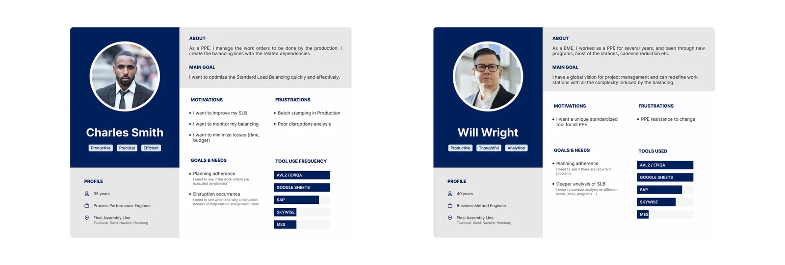
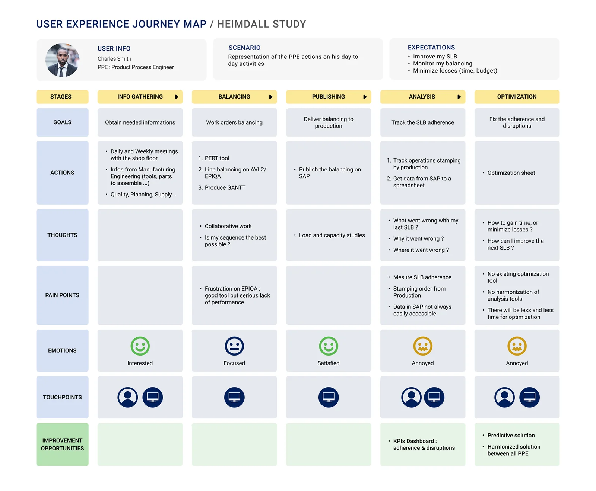
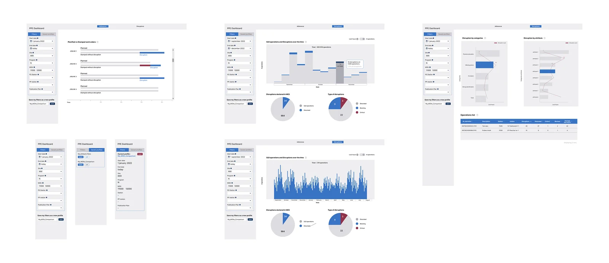

2022-2023 · 5 months
Making production KPI monitoring readable, from research to dashboard
UX study & production-monitoring dashboard

The challenge
On a mission at Airbus via Alten, I led a UX study on production monitoring: understanding how field teams and managers tracked progress, disruptions and performance indicators day to day, across several tools (AVL2/EPIQA, Google Sheets, SAP, SKYWISE, MES) that weren't always connected to each other.
The research surfaced a growing mental load as teams moved further into the analysis and optimization stages: information was scattered, and building a reliable overview meant cross-checking several sources by hand.
My job: frame this study, then design a KPI monitoring dashboard that centralizes compliance tracking, disruptions and planning in one clear place.
Methodology
Understand the field
Personas and the reality of day-to-day monitoring
I ran interviews with production teams to build personas representative of the roles involved in monitoring — technical profiles with days shaped by indicator tracking and disruption management.

The personas built from interviews with production teams. Map the journey
Locating where the mental load grows
The journey map surfaced recurring friction points: fragmented tools (AVL2/EPIQA, Google Sheets, SAP, SKYWISE, MES) to cross-check by hand, with a mental load that clearly increases in the analysis and optimization stages.

The journey map, with friction points identified in the analysis and optimization stages. Design the dashboard
Centralizing KPI monitoring
I designed a dashboard organized around the needs surfaced in research: a compliance and disruptions view, filters with saveable filter profiles, a planned-vs-actual schedule view, a breakdown of disruptions, and a list of ongoing operations.

The KPI monitoring dashboard, with its compliance, disruptions and operations-list views.
Results
- Centralized overview of production monitoring
- Dashboard designed to reduce mental load in the analysis and optimization stages
- Compliance and disruption tracking designed to be clearer for field teams